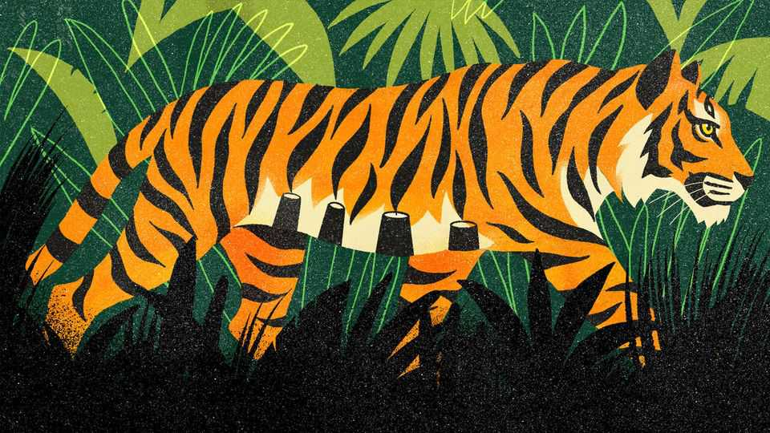

How India saved its tigers—and lions and rhinos and elephants
India’s wildlife-conservation success holds lessons for other environmental efforts

Oct 8th 2026
IN JUST THE past few weeks Indians have been mauled by tigers (in the west), attacked by leopards (in the north) and trampled by elephants (in the east). Like so many tragedies that occur with depressing frequency in the country—stampedes and bridge collapses are other good examples—these deaths highlight the failures of the state. Yet, in an odd way, they also reflect its successes. Indians are running into wild animals more often because India has become remarkably good at protecting them.
Consider the tiger. In the 1970s India’s national animal seemed to be heading towards extinction. Today the big stripey cat is thriving. Over the past two decades numbers have more than doubled to nearly 3,700, even as populations collapsed in richer and less crowded parts of Asia, such as Malaysia. So effective has India been in boosting the beast that it agreed to export tigers to Cambodia, where they had gone extinct. “Project Tiger”, as the conservation effort is known, has been a roaring success.
It is not the only one. A few years ago the western state of Gujarat opened a reserve to accommodate its expanding population of Asiatic lions. The chief minister of Assam, in the east, recently said that his state had in the previous year recorded zero cases of poaching related to its large and growing population of rhinos. Such triumphs have unleashed animal spirits. Since 2022 India has been importing cheetahs from Africa in the hope of re-establishing a species that went extinct within its borders in 1952.
Public sentiment is one reason India is so good at protecting its animals. Many animals—both wild and tame—are revered by Hindus. Harming creatures of any sort is frowned upon in Indian society more broadly. And the country has some of the tightest animal-protection laws in Asia. When it comes to wildlife conservation, it helps that the beasts involved are good-looking and enjoy broad appeal. Yet such is the strength of feeling that even rather less attractive creatures—such as the bald, hunched, carcass-eating vulture—are the subjects of efforts to boost their numbers.
Protecting animals has long been a pet cause of India’s leaders, too. More than two millennia ago Ashoka, the emperor after whom this column is named, issued edicts against hunting. Modern leaders have taken on his mantle. Indira Gandhi, prime minister for much of the 1970s, launched Project Tiger. Narendra Modi’s passions include wildlife photography.
A third factor in India’s wildlife-conservation success is policy design. The state functions most effectively in what wonks call “mission mode”, programmes organised around clear, limited objectives with dedicated teams. Some of India’s biggest public-health feats, such as eradicating polio and quickly rolling out vaccines during the covid-19 pandemic, were achieved in this way. The same is true for conservation, starting with Project Tiger. It has since inspired a menagerie of initiatives, including Project Elephant, Project Snow Leopard, Project Dolphin and Project Rhino.
Supporting the efforts are two groups. One is a wildlife bureaucracy of sorts. The British colonial government created the Imperial Forest Service to cut timber. After independence it was repurposed to protect forests and the animals within them. The other is civil society in the form of conservation NGOs, environmentalists, scientists and researchers, who provide expertise and hold the state to account.
India’s efforts are far from perfect. Indeed, they have created problems of their own, not least the growing cases of human-animal conflict. Yet it is extraordinary that the public and politicians of a relatively poor country with limited state capacity and endless demands on its resources can come together to achieve something as selfless as protecting other creatures. India’s wildlife conservation is an example of the country at its finest.
It is also evidence that other problems that look intractable today can be solved. A country that can find the resources to protect one-horned rhinos cannot claim to be too financially stretched or too busy prioritising economic growth to deal with its unbreathable air, its choked waterways or its rubbish-filled fields. And if the health of their constituents is too trivial a reason for India’s leaders to start cleaning up the country, perhaps some wily environmentalist could point out that tigers and elephants would benefit from unpolluted air and water, too.■